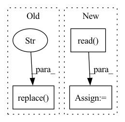

Pattern ID :41333
Before Change
if(self.split != "test"):
labels = pd.read_csv(pc_path.replace(".txt" , ".labels") , header=None, delim_whitespace=True, dtype = np.int32).values
else:
labels = np.zeros((points.shape[0], ), dtype = np.int32)
After Change
pc_path = self.path_list[idx]
log.debug("get_data called {}".format(pc_path))
data = PlyData.read( pc_path) ["vertex"]
points = np.zeros((data["x"].shape[0], 3), dtype=np.float32)
points[:, 0] = data["x"]
points[:, 1] = data["y"]
points[:, 2] = data["z"]
feat = np.zeros(points.shape, dtype=np.float32)
feat[:, 0] = data["red"]
feat[:, 1] = data["green"]
feat[:, 2] = data["blue"]In pattern: SUPERPATTERN
Frequency: 4
Non-data size: 3
Instances Fragment ID: 116402928
Project Name: isl-org/open3d-ml
Commit Name: dab92e984a3e20fa41dff5930bde75ba3fdf371b
Time: 2020-08-05
Author: sanskaragrawal107@gmail.com
File Name: ml3d/datasets/toronto3d.py
M Class Name: Toronto3DSplit
N Class Name: Toronto3DSplit
M Method Name: get_data(2)
N Method Name: get_data(2)
M Parent Class:
N Parent Class:
M File Name: ml3d/datasets/toronto3d.py
N File Name: ml3d/datasets/toronto3d.py
M Start Line: 41
M End Line: 51
N Start Line: 40
N End Line: 56
Before Change
file_description = ("\n"
+ " Path: " +
video_path.replace( video_name, "" ) + "\n\n"
+ " File: " + video_name + "\n\n"
+ " Resolution: " +
str(width) + "x" + str(height) + "\n\n"After Change
// 2) get first frame of the video
while(cap.isOpened()):
ret, frame = cap.read()
if ret == False:
break
cv2.imwrite(fist_frame, frame)
break Fragment ID: 116402916
Project Name: djdefrag/qualityscaler
Commit Name: 66b6f13eca96c3a97a48871850754b01b7403ab2
Time: 2022-06-02
Author: jjluca96@gmail.com
File Name: QualityScaler.py
M Class Name: AnonimousClass
N Class Name: AnonimousClass
M Method Name: show_video_info_with_drag_drop(1)
N Method Name: show_video_info_with_drag_drop(1)
M Parent Class:
N Parent Class:
M File Name: QualityScaler.py
N File Name: QualityScaler.py
M Start Line: 1081
M End Line: 1126
N Start Line: 1128
N End Line: 1198
Before Change
)
html_template = path_utils.read_file_contents_as_string(template)
h = html_template.replace("protostr" , protostr)
if magic:
if "ipykernel" not in sys.modules:After Change
datasets = []
for output_name, artifact_view in step.outputs.items():
df = artifact_view.read()
datasets.append({"name": output_name, "table": df})
h = self.generate_html(datasets)
self.generate_facet(h, magic)
Fragment ID: 116402917
Project Name: maiot-io/zenml
Commit Name: e51baa83069396f3ff822267e5250f84af1ad467
Time: 2021-11-14
Author: htahir111@gmail.com
File Name: src/zenml/post_execution/visualizers/facet_statistics_visualizer.py
M Class Name: FacetStatisticsVisualizer
N Class Name: FacetStatisticsVisualizer
M Method Name: visualize(3)
N Method Name: visualize(3)
M Parent Class:
N Parent Class:
M File Name: src/zenml/post_execution/visualizers/facet_statistics_visualizer.py
N File Name: src/zenml/post_execution/visualizers/facet_statistics_visualizer.py
M Start Line: 39
M End Line: 65
N Start Line: 47
N End Line: 52
Before Change
temp_file = output_file + ".tmp"
with open(temp_file, "w") as fout:
fout.write(open(output_file).read().replace("\r" , " ") ) // delete \r
//print(os.path.abspath(__file__))
cmd = r"cat %s | node %s %s > %s " % (temp_file, os.path.join(os.path.dirname(__file__), "preprocess_latex.js"), parameters.mode, output_file)After Change
ops = re.compile(r"\\operatorname {(%s)}" % operators)
temp_file = output_file + ".tmp"
with open(temp_file, "w") as fout:
prepre = open(output_file, "r").read() .replace("\r", " ") // delete \r
// replace split, align with aligned
prepre = re.sub(r"\\begin{(split|align|alignedat|alignat|eqnarray)\*?}(.+?)\\end{\1\*?}", r"\\begin{aligned}\2\\end{aligned}", prepre, flags=re.S)
prepre = re.sub(r"\\begin{(smallmatrix)\*?}(.+?)\\end{\1\*?}", r"\\begin{matrix}\2\\end{matrix}", prepre, flags=re.S) Fragment ID: 116402921
Project Name: lukas-blecher/latex-ocr
Commit Name: 97df469003d35553b53b408fe18d7ce676eb136c
Time: 2021-02-18
Author: luk.blecher@gmx.de
File Name: dataset/preprocessing/preprocess_formulas.py
M Class Name: AnonimousClass
N Class Name: AnonimousClass
M Method Name: main(1)
N Method Name: main(1)
M Parent Class:
N Parent Class:
M File Name: dataset/preprocessing/preprocess_formulas.py
N File Name: dataset/preprocessing/preprocess_formulas.py
M Start Line: 52
M End Line: 76
N Start Line: 53
N End Line: 89